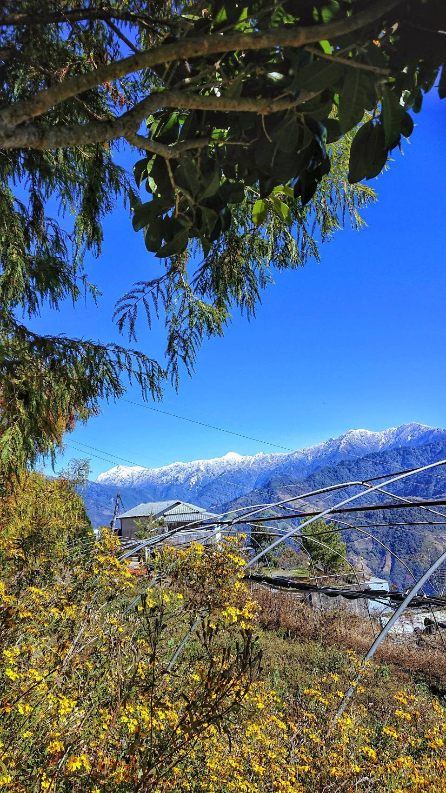
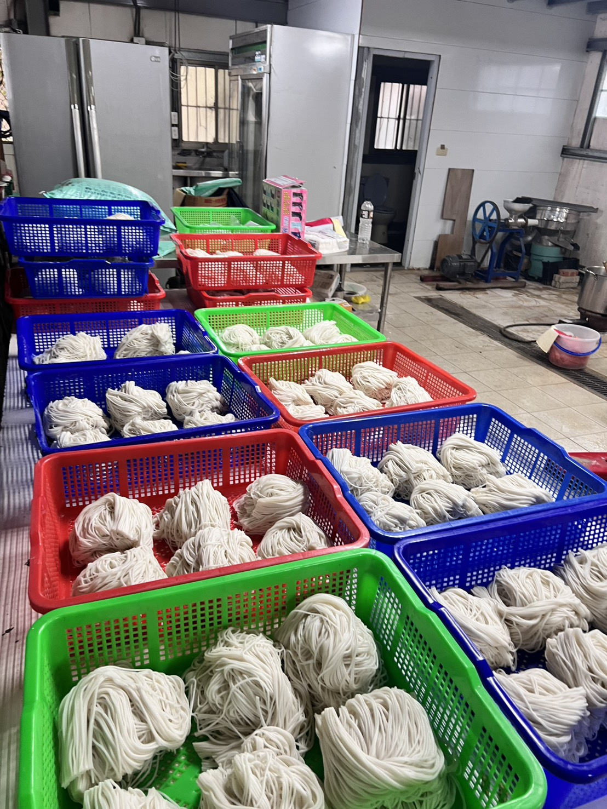

純米．小農．厚湯
🌾 純米．現磨：堅持純米現磨現做，找回消失的米香。鮮磨米漿，保留最自然的軟糯與彈性。
🥬 小農．在地：嚴選南投高山時蔬，讓每一口酸甜都帶著土地的鮮活，封存山林的鮮甜。
🔥 時間．淬煉：一罐一火慢熬，重現百年滇西滋味。一週僅營業三天，因為其餘時間我們都在與食材對話。
「誰說一碗米線不能像藝術品一樣講究？
我們把對滇西家鄉的思念，封存在這溫潤的陶罐裡。」
我們把對滇西家鄉的思念，封存在這溫潤的陶罐裡。」
🏔️ 在海拔 2000 公尺，暖一罐慢火時光。
這週末，上山來找我們吧。感受這份「慢」出來的真滋味。


